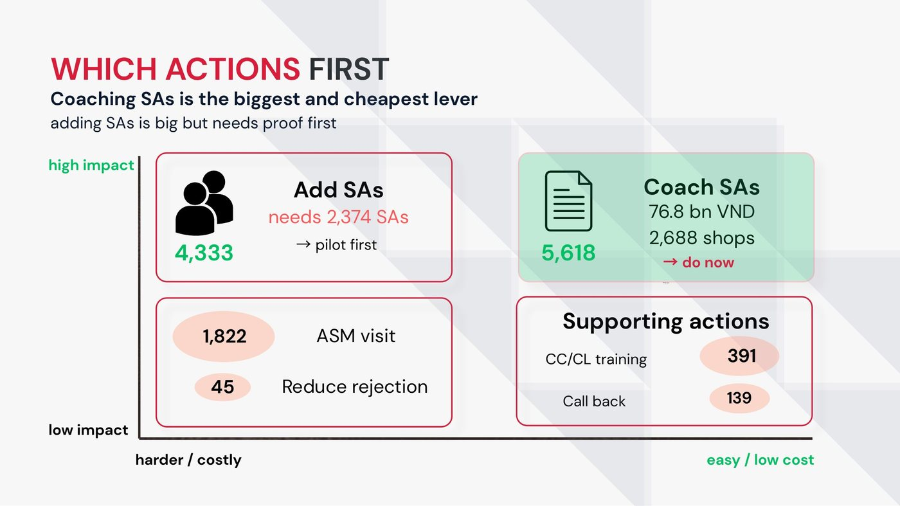

How much can each shop still grow?
Mỗi shop còn tăng được bao nhiêu?
Home Credit Vietnam sells consumer loans through 11,752 partner shops. Sales managers wanted to know where to put their people and budget first.
Home Credit Vietnam cho vay tiêu dùng qua 11.752 shop đối tác. Ban quản lý bán hàng muốn biết nên dồn nhân sự và ngân sách vào đâu trước.
- Growth came from opening shops. Each shop stayed at about 8 applications a month, and a third of active shops signed no contract in Q3 2026.
- If every shop matched the top 25% of similar shops, the network would sign about 16,300 more contracts a month (+41.6% on the forecast). Three quarters of that comes from the number of sales agents and how many applications each one handles; reject and cancel rates add little.
- Plan: coach agents in 2,688 shops now, and test hiring with a 96-shop randomised pilot before scaling. Closing half the gap in priority shops is worth about 6,175 contracts and 85.5 billion VND in loans a month.
- Tăng trưởng đến từ mở thêm shop. Mỗi shop vẫn chỉ khoảng 8 hồ sơ mỗi tháng, và một phần ba shop đang hoạt động không ký được hợp đồng nào trong quý 3/2026.
- Nếu mỗi shop làm tốt bằng 1/4 shop tốt nhất trong nhóm shop giống nó, mạng lưới ký thêm khoảng 16.300 hợp đồng mỗi tháng (cao hơn dự báo 41,6%). Ba phần tư đến từ số nhân viên bán hàng và số hồ sơ mỗi người làm; tỷ lệ từ chối và hủy đóng góp rất ít.
- Kế hoạch: kèm cặp nhân viên ở 2.688 shop ngay, và thử tuyển thêm bằng pilot 96 shop chọn ngẫu nhiên trước khi mở rộng. Thu hẹp một nửa phần chênh ở các shop ưu tiên tương đương khoảng 6.175 hợp đồng và 85,5 tỷ đồng tiền cho vay mỗi tháng.
My part: data exploration and the team's shared cleaning pipeline (Python and DuckDB SQL over 2 GB of files), the business overview, the breakdown of each shop's current sales, and the peer benchmark. We presented to a panel that included Home Credit Vietnam's Head of Sales Planning & Analysis.
Phần của mình: khám phá dữ liệu và pipeline làm sạch dùng chung cho cả nhóm (Python và DuckDB SQL trên 2 GB dữ liệu), bức tranh tổng quan kinh doanh, phần tách doanh số hiện tại của từng shop, và phần so sánh với shop cùng loại. Nhóm thuyết trình trước ban giám khảo có Trưởng bộ phận Sales Planning & Analysis của Home Credit Vietnam.

